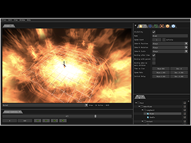

Download
Effekseer
This is a tool for designers to create particle effects.
It needs to use 1.5 for VirtualCast
To play the 1.6 effects in RPG Maker MZ, you need to install a plug-in.
Effekseer for Runtime
This is a runtime to show effects in your DirectX or OpenGL applications.
Effekseer for UnrealEngine4
Effekseer for GodotEngine3
Effekseer For RPGMakerMZ
Effekseer for WebGL
Effekseer for DXLibrary
This is a library to show effects in your DXLibrary applications.
Effekseer for Cocos2d-x
Previous Versions
1.60e
UnrealEngine4 (1.60e, UE4 4.23-4.26)
1.60d
UnrealEngine4 (1.60d, UE4 4.23-4.26)
1.60c
UnrealEngine4 (1.60c, UE4 4.23-4.26)
1.60b
UnrealEngine4 (1.60b, UE4 4.23-4.26)
1.6
UnrealEngine4 (1.60, UE4 4.23-4.26)
1.53e
EffekseerTool (Win,64bit,1.53e)
EffekseerTool (Win,32bit,1.53e)
1.53d
EffekseerTool (Win,32bit,1.53d)
1.53c
EffekseerTool (Win,32bit,1.53c)
UnrealEngine4 (1.53c, UE4 4.23-4.26)
1.53b
1.53a
Download (1.53a, UE4 4.23-4.24)
1.52n
EffekseerTool (Win,32bit,1.52n)
Download (1.52n, UE4 4.23-4.24)
1.52m
EffekseerTool (Win,32bit,1.52m)
Download (1.52m, UE4 4.23-4.24)
1.52j
EffekseerTool (Win,32bit,1.52j)
Download (1.52j, UE4 4.23-4.24)
1.52h
EffekseerTool (Win,32bit,1.52h)
Download (1.52h, UE4 4.23-4.24)
1.52g
EffekseerTool (Win,32bit,1.52g)
Download (1.52g, UE4 4.23-4.24)
1.52f
EffekseerTool (Win,32bit,1.52f)
1.52e
EffekseerTool (Win,32bit,1.52e)
1.52b
EffekseerTool (Win,32bit,1.52b)
1.52a
EffekseerTool (Win,32bit,1.52a)
Download (1.52a, UE4 4.23-4.24)
1.51b
EffekseerTool (Win,32bit,1.51b)
1.51
EffekseerTool (Win,32bit,1.51)
1.50
Download (1.52, UE4 4.23-4.24)
1.43
EffekseerForUnity (Legacy, 1.43b)
EffekseerForUnity (Legacy, 1.43c)
EffekseerForUE4 (1.43f, UE4 4.16-4.22)
EffekseerForUE4 (1.43e, UE4 4.16-4.22)
EffekseerForUE4 (1.43b, UE4 4.16-4.21)